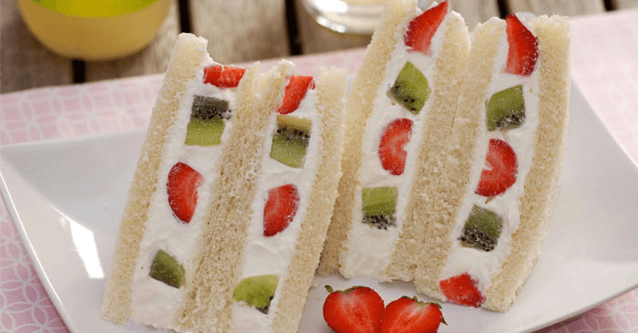
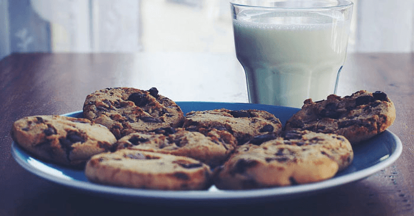
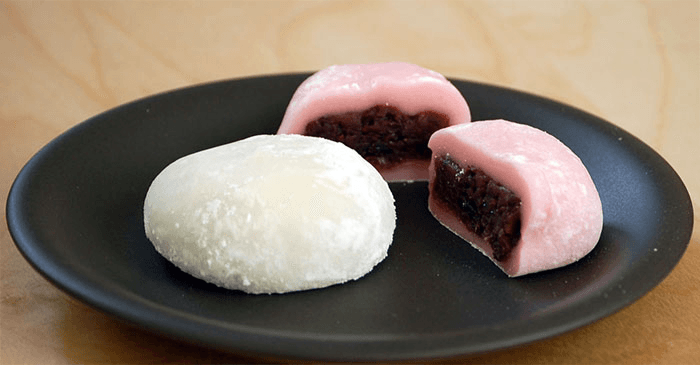

2. ขายขนมออนไลน์
ขายขนมออนไลน์ หนึ่งอาชีพยอดฮิต ที่ช่วยทำเงินอีกหนึ่งช่องทางให้กับเหล่าพ่อค้า แม่ค้าออนไลน์ เพราะเป็นของกินที่ขายได้เรื่อย ๆ มีลูกค้าแน่นอน ไม่ต้องมีหน้าร้านก็ขายได้ แค่เปิดรับออเดอร์ แล้วค่อยส่งทำให้ลูกค้า ก็เท่ากับว่าเราเป็นแม่ค้าขายขนมแล้ว สำหรับใครที่กำลังอยากลองหันมาจับธุรกิจขายขนมบนช่องทางออนไลน์ วันนี้พิมเพลินก็มีคำแนะนำดี ๆ ตั้งแต่เริ่มต้นขายขนมออนไลน์ จนถึงขั้นตอนการจัดส่ง มาฝากในบทความนี้กันค่ะ
ข้อควรรู้ ก่อนเริ่มขายขนมออนไลน์
• อยากขายขนมอะไร อาจจะดูเป็นคำถามโลกแตกไปสักนิด แต่ถือเป็นเรื่องสำคัญมาก ๆ โดยเฉพาะกับว่าที่พ่อค้า แม่ค้าที่อยากขายขนมออนไลน์ เพราะขนมที่ขายกันตามโซเชียลมีค่อนข้างเยอะ ถ้าเราขายขนมที่คนส่วนใหญ่ขายกันอยู่แล้ว คู่แข่งก็เยอะตามไปด้วยค่ะ
• ขนมที่จะขายจะอยู่ได้กี่วัน เพราะขนมแต่ละประเภท การจัดเก็บหรืออายุของขนมจะไม่เหมือนกัน เช่น ถ้าเราจะขายขนมอบแห้ง ขนมขบเคี้ยว จะสามารถจัดเก็บได้นาน จัดส่งข้ามจังหวัดได้ แต่ถ้าเป็นประเภท เบเกอรี่ เค้ก ขนมไทย ขนมหวานต่าง ๆ อายุของขนมจะอยู่ได้ไม่นานมาก การเก็บรักษาก็จะเป็นอีกแบบ ตรงนี้เป็นอีกจุดสำคัญที่เหล่าแม่ค้าออนไลน์จะต้องคำนึงถึง เพื่อที่จะได้ตอบกับลูกค้าของเราได้ค่ะ
• การจัดส่งต้องเลือกให้เหมาะกับประเภทของขนมด้วย เช่น ขนมเค้ก เบเกอรี่ ควรใช้การจัดส่งแบบแมสเซ็นเจอร์, LINE MAN แต่หากเป็นขนมประเภทอบแห้ง อบกรอบ สามารถใช้การจัดส่งผ่านไปรษณีย์ หรือขนส่งเอกชนที่จัดส่งแบบข้ามวันก็ได้ค่ะ แต่ต้องเน้นการแพ็คสินค้าที่แน่นหนาที่สุด เพื่อป้องกันขนมเสียหายค่ะ
• การโปรโมทขนมของเราให้เป็นที่น่าสนใจ คือเรื่องสำคัญไม่แพ้กัน เพราะลูกค้ามีตัวเลือกเยอะ จึงต้องมีรูปภาพโปรโมทที่สะดุดตา เพื่อดึงดูดลูกค้าค่ะ
อยากขายขนมออนไลน์ ขนมอะไรที่น่าขายในตอนนี้ ?
ขายขนมออนไลน์อะไรดี เป็นคำถามหลักขอว่าที่แม่ค้าขายขนมออนไลน์ ที่กำลังมองหาช่องทางสร้างรายได้เสริม แต่ถ้ายังไม่รู้ว่าจะขายอะไรดี พิมเพลินก็ได้ลิสรายชื่อขนมน่าขาย ไว้เป็นไอเดียสำหรับใครที่กำลังอยากเริ่มขายขนมออนไลน์ค่ะ
1. บราวนี่
เมนูขนมหวานขวัญใจมหาชน ที่เป็นที่นิยมขายใน Social ต้องยกให้ขนมบราวนี่ค่ะ ความนุ่มหนึบหนับด้วยช็อกโกแลต เป็นขนมที่ทำง่าย ๆ มีหลายสไตล์ เช่น บราวนี่กรอบ บราวนี่หน้าฟิล์ม เค้กบราวนี่ ฯลฯ ให้แม่ค้าออนไลน์ได้ลองฝึกทำขายค่ะ
2. ชีสเค้ก
อีกหนึ่งเมนูขนมที่ฮิตไม่แพ้กัน มีหลากหลายแนว ทั้งชีสเค้กแบบอบ ชีสเค้กแบบแช่เย็น ให้ลองทำขายค่ะ เสน่ห์ของชีสเค้ก ที่ทำให้เป็นขนมน่าขาย ขายดี คือกลิ่นหอม ๆ ของชีสกับเทกเจอร์เนื้อเค้กสุดละมุนลิ้น จะทำขายเป็นแบบปอนด์ หรือแบ่งชิ้นขายก็ได้กำไรดีค่ะ
3.แซนด์วิชผลไม้ครีมสด

แซนด์วิชผลไม้ครีมสด หรือ ‘ฟุรุสึซันโด’ แซนด์วิชผลไม้อวบอ้วนสไตล์ญี่ปุ่น หนึ่งขนมน่าขาย ทำได้ง่าย ๆ วัตถุดิบไม่เยอะ แต่ขายได้กำไรงามค่ะ ขนมชนิดนี้จะมีส่วนประกอบของครีมค่อนข้างเยอะ จึงต้องพิถีพิถันการห่อสินค้าเป็นพิเศษ ควรใช้พลาสติกแรปถนอมอาหารห่อสินค้าก่อนใส่ในบรรจุภัณฑ์ เพื่อป้องกันหน้าของขนมเสียหายค่ะ
4.คุกกี้

ขนมสุดคลาสสิกไว้กินเล่นคู่กับชา กาแฟ มีหลากหลายสูตรให้เลือกทำขาย ทั้งนม, เนย, ช็อกโกแลต ฯลฯ แบบนิ่ม แบบกรอบ แล้วแต่สูตรและความถนัดเลยค่ะ
5.ขนมไดฟูกุ

ขนมไดฟูกุ ขนมหวานสไตล์ญี่ปุ่นเนื้อหนุบหนับ กำลังเป็นที่นิยมในวงการขนมหวานเลยล่ะค่ะ วิธีก็หาทำได้ไม่ยาก ส่วนใหญ่ที่นิยมขายจะเป็นไส้ถั่วแดงที่เป็นไส้คลาสสิค แต่ถ้าเพิ่มสตรอว์เบอร์รีสดลงไปก็จะช่วยเพิ่มมูลค่าได้อีกเยอะ และเปลี่ยนจากแป้งสีขาวเป็นแป้งสีเขียวจากชาเขียวก็จะยิ่งทำให้ลูกค้าอยากซื้อเพิ่มขึ้น เพราะมีหลายไส้ หลายรสชาติให้เลือกนั่นเองค่ะ
ขายขนมออนไลน์ มีอะไรบ้างที่พ่อค้า แม่ค้าออนไลน์ จะต้องใส่ใจเป็นพิเศษ ?
• คุณภาพของขนม คุณภาพสินค้า ต้องรู้จริงในสิ่งที่จะขาย ขายขนมออนไลน์ สิ่งสำคัญที่แม่ค้าออนไลน์ต้องนึกถึงเป็นอันดับแรกก็คือ “ไม่ว่าจะขายอะไร เราต้องรู้จริงในสิ่งที่ขาย” เช่น ถ้าลูกค้าถามว่าขนมชนิดนี้เก็บได้กี่วัน มีส่วนผสมอะไรบ้าง แน่นอนค่ะ ว่าคำตอบของเราคือสิ่งที่ทำให้ลูกค้าตัดสินใจซื้อหรือไม่ซื้อ แต่สิ่งที่ตอบจะต้องเป็นสิ่งที่เรารู้จริง ไม่ใช่การคาดเดา และควรแนะนำวิธีการเก็บขนมแบบถูกวิธีให้กับลูกค้าด้วย เช่น ถ้าขนมออนไลน์ที่ขาย มีอายุอยู่ได้ไม่นาน ควรบอกลูกค้าไปตามตรงค่ะ ซึ่งจุดนี้จะเป็นจุดสำคัญที่ลูกค้ารู้สึกถึงความจริงใจจากคุณ และได้ใจจากลูกค้าไปได้ง่าย ๆ ค่ะ
• แพ็คเกจและรูปสินค้า หนึ่งข้อสำคัญที่ต้องพึงระลึกเอาไว้เสมอค่ะว่า ขายขนมออนไลน์ ไม่ว่าจะเป็น เบเกอรี่ออนไลน์ ขนมอบกรอบ ขนมอบแห้ง คุกกี้ ขนมเค้ก ขนมญี่ปุ่น ฯลฯ ล้วนเป็นสินค้าที่ลูกค้าซื้อด้วยอารมณ์ล้วน ๆ รูปสินค้าสวย ๆ รูปแบบบรรจุภัณฑ์ที่ดูดี สะอาด ปลอดภัย จึงเป็นสิ่งที่ไม่ควรมองข้าม เพราะจะเป็นตัวช่วยสำคัญให้สินค้ามีความน่าสนใจ ลูกค้าเห็นรูปปุ๊บ อยากซื้อปั๊บ!
Tips & Trick : นอกจากรูปขนมหรือสินค้า จะต้องสวย มีความน่าทานแล้ว รูปที่ใช้ควรมีการอัพเดทบ่อย ๆ ซึ่งคุณสามารถใช้สมาร์ทโฟนถ่ายรูปสินค้าเก็บไว้หลาย ๆ มุม หลาย ๆ โลเคชั่น เพื่อเก็บไว้ใช้ในครั้งต่อ ๆ ไป แต่ถ้ารู้สึกว่ารูปสินค้ายังสวยไม่พอ อยากให้รูปขนมมีสีที่สวยน่าทานยิ่งขึ้น แอปแต่งรูปสวย ๆ ตัวช่วยชั้นเยี่ยม ที่จะทำให้รูปขนมของคุณสวยยิ่งขึ้น และต้องไม่ลืมที่จะใส่ Logo ลายน้ำ ในรูปภาพสินค้าด้วยนะคะ เพื่อช่วยป้องกันการขโมยรูปภาพสินค้าจากร้านของเรานั่นเองค่ะ
• ช่องทางการโปรโมทร้านขายขนมออนไลน์ การทำให้สินค้าเป็นที่รู้จักในโลกออนไลน์ ต้องอาศัยการโปรโมทค่ะ ซึ่งสามารถใช้ได้เกือบทุกช่องทาง ซึ่งการโปรโมทร้านขายขนมออนไลน์นั้นไม่ได้แตกต่างจากร้านค้าออนไลน์อื่น ๆ สักเท่าไหร่ค่ะ แต่ความยากจะอยู่ตรงที่ จะทำยังไงให้ลูกค้าเชื่อว่าของเราดี ขนมที่เราขายมีรสชาติอร่อย หรือแตกต่างจะร้านทั่วไปยังไง ซึ่งตรงนี้เราอาจจะต้องมีการเล่าเรื่อง (Story Telling) ให้ขนมของคุณมีความน่าสนใจ ช่วยสร้างมูลค่าให้สินค้า ช่องทางการโปรโมท และขายขนมออนไลน์ตาม Social ต่าง ๆ ที่แม่ค้าออนไลน์มักใช้ในการขายขนมและตอบลูกค้า เช่น Facebook Page, Facebook Group, Instagram, Line OA จะเป็นช่องทางหลักที่แม่ค้าออนไลน์ใช้ในการขายขนมออนไลน์ พูดคุยกับลูกค้า ซึ่งหากขายหลายช่องทาง Social ซึ่งอาจจะทำให้ตอบลูกค้าไม่ทัน เพราะต้องเปิดหลายแอปฯ คุณสามารถสมัครใช้งาน Page365 ที่มีฟีเจอร์รวมแชทจากทุก Social มาช่วยจัดการง่าย ๆ ในแอปฯ เดียวได้เหมือนกันนะคะ
• การชำระเงิน การชำระเงินเดี๋ยวนี้มีหลายช่องทางให้พ่อค้า แม่ค้าออนไลน์ได้เลือกใช้ค่ะ ตั้งแต่รับโอนไม่ว่าจะผ่าน ตู้ATM, Mobile Banking หรือจ่ายแบบ Promptpay เพื่อเพิ่มช่องทางการรับเงินและมอบความสะดวกสบายให้กับลูกค้านั่นเอง
• ขายขนมออนไลน์ ต้องแพ็คสินค้าให้ดี ป้องกันสินค้าเสียหาย หนึ่งในหัวใจสำคัญของการขายขนมออนไลน์ ก่อนการจัดส่ง ต้องไม่ลืมนึกถึงขั้นตอนการแพ็คสินค้า ต้องแน่ใจด้วยว่า ขนมของคุณจะส่งถึงมือผู้รับโดยปลอดภัย ไม่บุบสลายระหว่างการจัดส่ง โดยขนมแต่ละประเภทล้วนมีวิธีการแพ็คสินค้าแตกต่างกันค่ะ ซึ่งพิมเพลินได้แบ่งและจัดหมวดหมู่เอาไว้ให้แล้ว ดังนี้ค่ะ
• ขนมอบกรอบ ขนมอบแห้ง ขนมอบแห้ง ทุกชนิดไม่ว่าจะเป็น คุกกี้ ขนมปังกรอบ ขนมขบเคี้ยวอื่น ๆ ขนมประเภทนี้แม้จะอยู่ได้นาน แต่ก็เสี่ยงต่อการแตกละเอียดได้ง่ายเมื่อมีการกระทบกระเทือน และไม่ทนต่ออากาศชื้นค่ะ ทันทีที่ขนมของคุณเพิ่งออกจากเตา ก่อนจะแพ็คสินค้า ควรทิ้งไว้ให้เย็นก่อนนำขนมประเภทนี้ใส่ในบรรจุภัณฑ์ ควรใช้ถุงซิปล็อก พร้อมซีนปิดปากถุงเพื่อกันอากาศเข้าไปค่ะ ถ้าจัดส่งขนมประเภทนี้แบบพัสดุ ควรเลือกกล่องที่มีขนาดพอดีกับสินค้า ห่อบับเบิ้ลให้แน่นหนา เพื่อป้องกันขนมของเราเสียหายระหว่างจัดส่งค่ะ
• ขนมทำสด ขนมที่มีอายุสั้น ขนมทำสดต่าง ๆ เช่น เบเกอรี่ ขนมเค้ก ขนมไดฟูกุ ฯลฯ ขนมประเภทนี้เป็นขนมที่ต้องดูแลเป็นพิเศษจนกว่าจะถึงมือลูกค้า ก่อนการจัดส่งทุกครั้ง ควรเช็คความเรียบร้อยของกล่องบรรจุภัณฑ์ ควรมีกระดาษรองและปิดคลุมภายในเพื่อไม่ให้ขนมสัมผัสกับกล่องโดยตรง พื้นฐานรองขนมในกล่องต้องไม่หลุดออก เพื่อเป็นฐานให้ขนมของคุณไม่ไหลเอียงหรือคว่ำไปทางอื่น รวมไปถึงการจัดวางกล่องบนรถจัดส่ง ควรวางในจุดที่เป็นพื้นมั่นคง ไม่วางซ้อนกันสูง ๆ เพื่อป้องกันขนมเกิดความเสียหายก่อนถึงมือลูกค้าค่ะ
• การจัดส่ง การจัดส่ง เป็นเรื่องที่พ่อค้า แม่ค้าที่ขายขนมออนไลน์จะต้องใส่ใจพิเศษค่ะ เพราะขนมแต่ละประเภท กรรมวิธีการผลิตล้วนไม่เหมือนกัน จัดส่งสินค้าจึงต้องแตกต่างกันออกไปค่ะ ถึงแม้ต่อให้ขนมของคุณมีคุณภาพดี อร่อยตามคำบอกเล่าแค่ไหน แต่ถ้ามีปัญหาเรื่องการจัดส่งที่ไม่อำนวยต่อประเภทของขนมที่เราขาย ก็จะทำให้เสียลูกค้าได้ง่าย ๆ ตรงนี้จึงเป็นจุดที่ต้องให้ความสำคัญเป็นอย่างมาก ควรเลือกให้ตรงกับประเภทของขนมออนไลน์ที่คุณขายค่ะ วันนี้พิมเพลินจึงขออาสามอบคำแนะนำ และเปรียบเทียบกันให้เห็นว่าจัดส่งแบบไหนดี และเหมาะกับประเภทของขนมที่คุณขายมากที่สุดค่ะ
• จัดส่งแบบพัสดุ การจัดส่งประเภทนี้ จะเหมาะกับขนมประเภท ขนมอบแห้ง ขนมอบกรอบ คุกกี้ ขนมที่สามารถอยู่ได้เป็นเวลานาน ๆ ส่งข้ามจังหวัดได้ ซึ่งรูปแบบการจัดส่งประเภทนี้จะมีบริษัทขนส่งของไปรษณีย์ไทยและเอกชน เช่น Kerry Express, J&T Express, Ninja Van, Flash Express ฯลฯ ให้พ่อค้า แม่ค้าออนไลน์ได้เลือกใช้บริการค่ะ
• จัดส่งแบบแมสเซ็นเจอร์ การจัดส่งแบบแมสเซนเจอร์ จัดว่าเป็นตัวเลือกไว้ตอบโจทย์ลูกค้าที่ต้องการสินค้าภายในวันนั้น เป็นการส่งแบบเรียลไทม์ เหมาะกับขนมทุกประเภทค่ะ มีหลายค่ายให้เลือกใช้บริการ เช่น GrabExpress, LINE MAN, Lalamove, SKOOTAR, GET DELIVERY, Deliveree ฯลฯ สามารถใช้บริการแมสเซนเจอร์ไปรับของถึงที่ได้เลย ส่วนอัตราค่าบริการการจัดส่งจะมีความแตกต่างกันขึ้นอยู่กับระยะทางของแต่ละค่ายค่ะ
ข้อจำกัด : บริการจัดส่งประเภทนี้ แม้จะมีหลายเจ้าที่สามารถส่งขนม อาหารต่าง ๆ ได้ก็จริง แต่ทั้งนี้ทั้งนั้น เกือบทุกค่ายก็จะมีข้อจำกัดในการจัดส่งขนมบางประเภท อย่างเช่น SKOOTAR ที่เขาระบุชัดเจนว่าไม่สามารถส่งขนมเค้กทุกประเภท เพื่อป้องกันขนมเกิดการเสียหายระหว่างจัดส่ง ฉะนั้น ควรศึกษาข้อจำกัดบริการจัดส่งของแต่ละค่ายให้ละเอียดก่อนเลือกใช้บริการค่ะ
• วินมอเตอร์ไซค์ ไปค่ะพี่สุชาติ! วิธีง่ายสุดเบสิค ก็คือพี่วินแถวหน้าปากซอยบ้านของเรานี่แหละค่ะ ส่งได้ทุกที่ ซอกแซกได้ทุกตรอกซอกซอย เรียกใช้บริการกันได้เลย ค่าจัดส่งก็คิดตามระยะทาง แต่อาจจะต้องคำนวณค่าจัดส่งให้ดีสักหน่อย ป้องกันค่าส่วนเกินค่ะ หรือถ้าจะให้ชัวร์ ควรมีเบอร์พี่วินขาประจำ แล้วดีลราคากันให้เรียบร้อยเพื่อป้องกันการค่าจัดส่งที่บานปลายค่ะ
• นัดรับ - ส่ง ตามจุดสถานที่สำคัญ นัดรับสินค้า เป็นอีกช่องทางการจัดส่งสุดเวิร์ค ส่งขนม เบเกอรี่ ได้ทุกรูปแบบ เหมาะสำหรับการจัดส่งในพื้นที่ใกล้ ๆ ระหว่างแม่ค้าออนไลน์ และลูกค้าค่ะ เช่น ตามเส้นทางรถไฟฟ้า BTS, MRT หรือตามจุดสำคัญ ๆ ค่ะ วิธีนี้ถือเป็นการจัดส่งขนมที่ Win - Win กันทั้งสองฝ่าย ลูกค้าได้ขนมที่สั่งแบบรวดเร็วทันใจ แถมคุณยังได้ความสบายใจว่าขนมของคุณจะถึงมือลูกค้าโดยไม่มีการบุบสลายระหว่างการจัดส่งอย่างแน่นอน และนี่ก็เป็นเคล็ดลับขั้นตอนของการขายขนมออนไลน์ ที่พิมเพลินได้นำมาบอกเล่าให้กับทั้งพ่อค้า แม่ค้าขายขนมออนไลน์ทั้งมือใหม่ มือโปร ตั้งแต่เริ่มต้นจนถึงวิธีเลือกการจัดส่ง เอาไว้เป็นแนวทางเพื่อนำไปปรับใช้เปิดร้านขนมออนไลน์ของคุณให้ราบรื่นยิ่งขึ้นค่ะ ^^